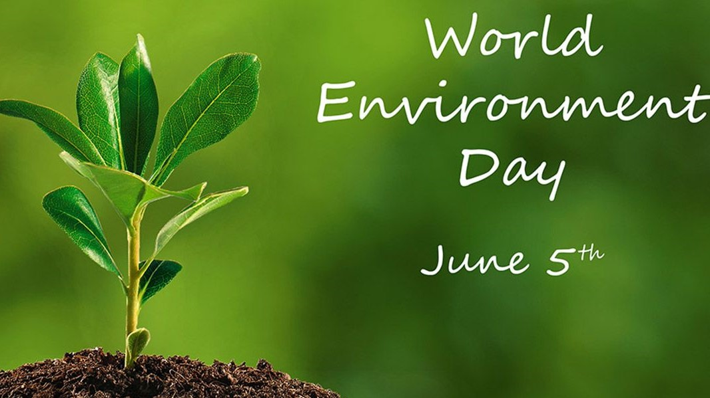

An ecosystem is a geographic area where plants, animals, and other organisms, as well as weather and landscape, work together to form a bubble of life. Ecosystems contain biotic or living, parts, as well as abiotic factors, or nonliving parts. Biotic factors include plants, animals, and other organisms. Abiotic factors include rocks, temperature, and humidity.
According to the type of vegetation that mainly characterizes them, ecosystems can be recognized and divided into:
Forest ecosystems are classified according to their climate type as tropical, temperate or boreal. In the tropics, rainforest ecosystems contain more diverse flora and fauna than ecosystems in any other region on earth. In these warm, moisture-laden environments, trees grow tall and foliage is lush and dense, with species inhabiting the forest floor all the way up to the canopy. In temperate zones, forest ecosystems may be deciduous, coniferous or oftentimes a mixture of both, in which some trees shed their leaves each fall, while others remain evergreen year-round. In the far north, just south of the Arctic, boreal forests – also known as taiga – feature abundant coniferous trees.Click here for more information.
Different types of grassland ecosystems can be found in prairies, savannas and steppes. Grassland ecosystems are typically found in tropical or temperate regions, although they can exist in colder areas as well, as is the case with the well-known Siberian steppe. Grasslands share the common climactic characteristic of semi-aridity. Trees are sparse or nonexistent, but flowers may be interspersed with the grasses. Grasslands provide an ideal environment for grazing animals.Click here for more information.
The common defining feature among desert ecosystems is low precipitation, generally less than 25 centimeters, or 10 inches, per year. Not all deserts are hot – desert ecosystems can exist from the tropics to the arctic, but regardless of latitude, deserts are often windy. Some deserts contain sand dunes, while others feature mostly rock. Vegetation is sparse or nonexistent, and any animal species, such as insects, reptiles and birds, must be highly adapted to the dry conditions.Click here for more information.
As with deserts, a harsh environment characterizes ecosystems in the tundra. In the snow-covered, windswept, treeless tundra, the soil may be frozen year-round, a condition known as permafrost. During the brief spring and summer, snows melt, producing shallow ponds which attract migrating waterfowl. Lichens and small flowers may become visible during this time of year. The term “tundra” most commonly denotes polar areas, but at lower latitudes, tundra-like communities known as alpine tundra may be found at high elevations.Click here for more information.
Freshwater ecosystems can be found in streams, rivers, springs, ponds, lakes, bogs and freshwater swamps. They are subdivided into two classes: those in which the water is nearly stationary, such as ponds, and those in which the water flows, such as creeks. Freshwater ecosystems are home to more than just fish: algae, plankton, insects, amphibians and underwater plants also inhabit them.Click here for more information.
Marine ecosystems differ from freshwater ecosystems in that they contain saltwater, which usually supports different types of species than does freshwater. Marine ecosystems are the most abundant types of ecosystems in the word. They encompass not only the ocean floor and surface but also tidal zones, estuaries, salt marshes and saltwater swamps, mangroves and coral reefs.Click here for more information.